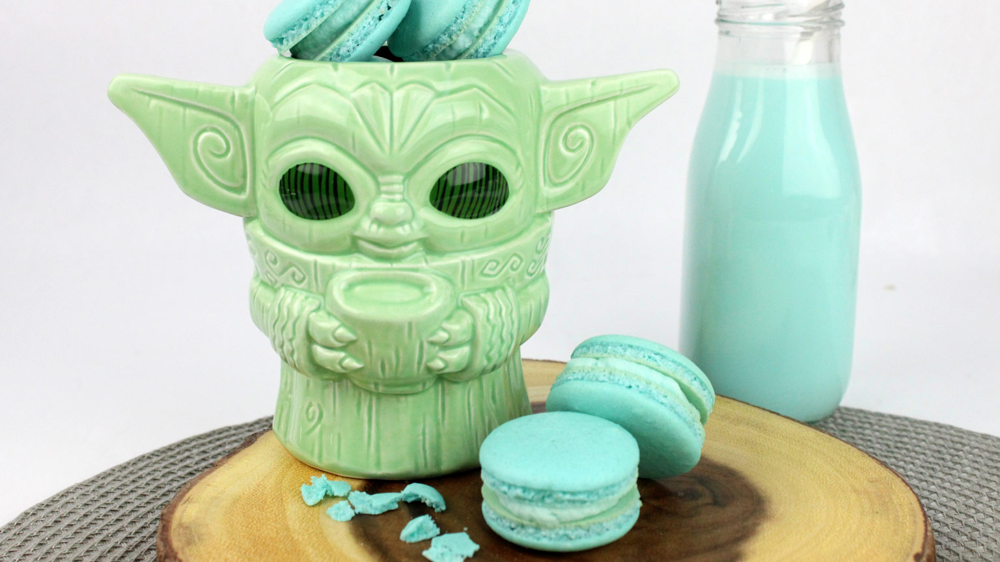

Mando Macarons

Makes 30 Macarons
MACARONS INGREDIENTS:
- 1 Cup almond flour, finely ground
- 1 Confectioners Sugar
- 1/2 Teaspoon salt
- 3 Egg whites, room temperature
- 3/4 cup granulated sugar
- 1/2 Teaspoon clear vanilla
- 2-3 Drops blue good gel dye
FILLING INGREDIENTS:
- 1/2 Cup (1 Stick) unsalted butter
- 1-1/2 Cups Confectioners sugar
- 3 Tablespoons heavy cream
- 1/2 Teaspoon clear vanilla
- 1 Drop blue food gel dye
- 2/3 Cup raspberry jam
STEPS:
- Into a medium bowl, sift the almond flour and confectioners sugar, twice. Set aside.
- In the bowl of an electric mixer with a whisk attachment, whisk the egg whites for 2 to 3 minutes, until foamy.
- Slowly whisk in the granulated sugar, until stiff peaks form.
- Stir in the vanilla and food coloring.
- Fold in 1/3 of the dry ingredients, until just combined.
- Continue with another 1/3, followed by the rest, until the batter falls into ribbons and you can make a "figure 8".
- Transfer the macaron batter into a piping bag with a round tip.
- Prep baking sheets with parchment.
- Pipe the macarons onto the parchment into small 1-inch circles, spacing them 2 inches apart.
- Tap the baking sheet firmly onto a flat surface a few times to release air bubbles. Let the macarons sit at room temperature for 40 mins, until dry to the touch.
- Preheat the oven to 300 degrees F.
- Bake for 12 to 15 minutes, until they rise and the "feet" have formed. Transfer to a wire rack, let cool completely.
- In a medium bowl with a handheld mixer, mix the butter and confectioners sugar.
- Add the heavy cream, vanilla, and food gel dye.
- Transfer the buttercream to a piping bag. Onto the flat side of one macaron shell, pipe a circle of buttercream.
- Add a small spoonful of jam into the center. Top it with a second macaron shell to sandwich.
- Repeat with remaining macaron shells and filling, to serve.
Thanks goes to Admiral Achbars Snack Bar. Its not a trap! https://www.starwars.com/news/blue-milk-mando-macarons